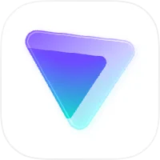

ProtonVPN
Based in Switzerland, open-source, independently audited, and one of the only VPNs with a genuinely free tier. No logs, no ads, no data selling.
Get ProtonVPN-
1
-
2
Create a free Proton account
Go to proton.me and create a free account. The same account works for ProtonVPN, Proton Mail, and Proton Authenticator.
-
3
Connect to a server
Open the app and tap Quick Connect. ProtonVPN will automatically connect you to the fastest available server. Your connection is now encrypted.
-
4
Use it on public Wi-Fi
Whenever you connect to public Wi-Fi — at a coffee shop, airport, hotel, or library — turn on ProtonVPN first. This encrypts your connection and prevents anyone on the same network from intercepting your data.
-
5
Consider upgrading for more features
The free tier includes unlimited data on servers in 5 countries. The paid plan ($4.99/month) adds 90+ countries, faster speeds, and the ability to connect multiple devices simultaneously.
A VPN hides your traffic from your ISP and local network, but the VPN provider can still see your traffic. This is why choosing a trustworthy provider (like ProtonVPN) matters. A VPN also does not make you anonymous on websites — they can still identify you through cookies and your account logins.
Use it on public Wi-Fi (always), when you want to prevent your ISP from seeing your browsing, or when traveling abroad and want to access home services. You don't necessarily need it on your home network.
What a VPN actually does
A VPN (Virtual Private Network) creates an encrypted tunnel between your device and a server operated by the VPN provider. All your internet traffic travels through this tunnel, which means:
- Your internet service provider (ISP) can see that you’re connected to a VPN, but cannot see which websites you visit or what you do online
- Anyone on the same public Wi-Fi network cannot intercept your traffic
- Websites you visit see the VPN server’s IP address rather than your real IP address
What a VPN does not do: it does not make you anonymous, it does not protect you from malware, and it does not prevent websites from tracking you through cookies or your account logins.
The VPN industry problem
The VPN market is full of misleading products. Many free VPNs are funded by selling your browsing data to advertisers — the exact opposite of what you want from a privacy tool. Some VPNs have been caught logging user activity despite claiming not to. Others are owned by companies with opaque ownership structures in privacy-unfriendly jurisdictions.
This is why provider choice matters enormously. ProtonVPN is operated by the same Swiss company behind Proton Mail. It has been independently audited, its source code is publicly available, and it has a documented history of refusing to comply with requests that would compromise user privacy.
When a VPN is most useful
Public Wi-Fi: This is the clearest use case. When you connect to Wi-Fi at a coffee shop, airport, or hotel, other people on the same network can potentially intercept unencrypted traffic. A VPN prevents this.
ISP surveillance: In the United States, your ISP is legally permitted to sell your browsing history to advertisers. A VPN prevents your ISP from seeing which sites you visit.
Traveling abroad: Some countries block certain websites and services. A VPN lets you connect to a server in your home country to access services normally.
Further Reading
- ProtonVPN No-Log PolicyProtonVPN
- How to Choose a VPNPrivacy Guides
- VPN Myths DebunkedProton Blog